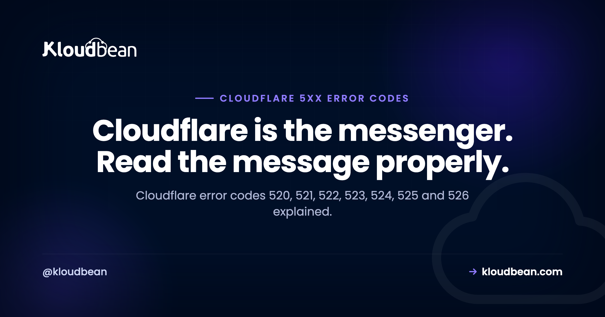

Cloudflare Error Codes 520 to 527: What Each One Means and How to Fix It

There is one thing worth understanding before you change a single setting: every Cloudflare error code in the 520 to 527 range is generated by Cloudflare, not by your server. Each one is Cloudflare saying it tried to reach your origin and did not get an answer it could use. The code tells you how that attempt failed, which is genuinely useful diagnostic information, and it gets thrown away by most people who see the orange page and start clicking through Cloudflare settings at random.
Codes 520 to 527 are produced by Cloudflare when it cannot get a valid response from your origin server. 521 means your server refused the connection, 522 means the connection timed out, 523 means Cloudflare could not route to your IP, 524 means your server was too slow to finish responding, and 525 or 526 mean the TLS handshake with your origin failed. The fastest way to diagnose any of them is to bypass Cloudflare and request your origin IP directly. If the origin answers, the problem is between Cloudflare and your server. If it does not, the problem is your server.
The one test that saves you an hour
Before touching Cloudflare, prove where the failure is. Ask your origin directly, skipping Cloudflare entirely, using --resolve so the correct hostname and certificate are still used:
# Replace 203.0.113.10 with your real origin IP
curl -svo /dev/null --resolve example.com:443:203.0.113.10 https://example.com
# And over plain HTTP, to see whether TLS is the issue
curl -I --resolve example.com:80:203.0.113.10 http://example.com
# Is anything even listening?
nc -vz 203.0.113.10 443Two outcomes, and they send you in opposite directions. If the origin responds correctly, your server is healthy and something is blocking or breaking the path between Cloudflare and it, which usually means a firewall or a TLS mismatch. If the origin fails the same way, Cloudflare is simply reporting a real outage and you should be looking at your web server, not your DNS proxy.
Do this from a machine outside your own network. Running the test from the server itself, or from an office IP that is already allowed through the firewall, is how people conclude everything is fine while Cloudflare is being refused.
What each code actually means
| Code | Cloudflare's wording | What really happened | Look at |
|---|---|---|---|
| 520 | Web server returned an unknown error | Origin answered with something Cloudflare could not interpret: an empty reply, malformed or oversized headers, or a connection dropped mid-response | Application crashes, header and cookie size |
| 521 | Web server is down | Origin actively refused the TCP connection | Web server stopped, or a firewall blocking Cloudflare |
| 522 | Connection timed out | The TCP handshake never completed | Packet filtering, overloaded server, security group |
| 523 | Origin is unreachable | Cloudflare could not route to the address at all | Wrong A record, dead or changed origin IP |
| 524 | A timeout occurred | Connection succeeded, but the response was not finished in time | Slow queries, long-running requests |
| 525 | SSL handshake failed | TLS negotiation with the origin failed | Missing or invalid origin certificate, SSL mode |
| 526 | Invalid SSL certificate | Origin certificate could not be validated | Expired or self-signed cert under Full (strict) |
Read the difference between 521 and 522 carefully, because it is the most useful distinction in the whole table. A refused connection means something answered and said no, which points at a firewall rule or a stopped service. A timeout means nothing answered at all, which points at packets being dropped silently. Same symptom for your visitors, different root cause, different fix.
The two causes behind most of these
Across the whole family, two things account for a large share of cases, and neither is a Cloudflare setting.
1. Your firewall is blocking Cloudflare
Once you put a site behind Cloudflare, every request arrives from a Cloudflare address rather than from your visitors. If your firewall only allows a handful of known addresses, or a security rule was written before Cloudflare was introduced, Cloudflare gets refused and your visitors get a 521. The fix is to allow Cloudflare's published IP ranges on ports 80 and 443. Cloudflare publishes those ranges at cloudflare.com/ips-v4 and cloudflare.com/ips-v6, and they do change occasionally, so a rule written once and forgotten is worth re-checking.
2. Your intrusion prevention banned Cloudflare
This one is worth spelling out because it is genuinely counter-intuitive and it produces the most confusing version of these errors. Tools like Fail2ban work by watching your logs and blocking addresses that misbehave. Behind Cloudflare, every log line shows a Cloudflare address. So when one badly behaved visitor triggers a ban, the address that gets banned is Cloudflare's, not the visitor's.
The result looks like intermittent nonsense. Some visitors see the site, others get a 521, and it shifts around as different Cloudflare addresses get banned and released. Nothing in your Cloudflare dashboard explains it, and your server looks perfectly healthy because it is.
The fix is to restore the real visitor IP at the web server, using the CF-Connecting-IP header or the real IP module, so your logs record actual visitors and your ban rules act on them. Do this before you tune any rate limiting or intrusion prevention, because until you do, every one of those tools is reasoning about the wrong addresses.
Worth being blunt: if you run Fail2ban behind Cloudflare without restoring visitor IPs, you have built a mechanism that periodically takes your own site offline. It is not a matter of whether it fires, only when.
Which article you actually need
The three most common codes have their own detailed guides, because their causes barely overlap:
- Error 521, web server is down. Connection refused. Service stopped, firewall rule, or a banned Cloudflare range.
- Error 520, web server returned an unknown error. The vaguest of the set. Empty responses, oversized headers, and crashes mid-request.
- Error 525, SSL handshake failed. Almost always an origin certificate problem combined with the wrong SSL mode.
The three you can usually fix yourself in minutes
523, origin is unreachable. Cloudflare has an address for your site that does not lead anywhere. Nearly always a stale DNS record after a server move or a rebuild that changed the IP. Check what your A record points at, compare it against your actual server address, and correct it. It is one of the few codes in this family with a genuinely simple answer. The exception is worth knowing about, because no server-side work will ever find it: a route table entry as broad as 172.0.0.0/8 swallows Cloudflare's own public range, which the 523 origin is unreachable guide covers along with the AAAA-record trap.
524, a timeout occurred. The connection worked and your server started responding, but did not finish inside Cloudflare's proxy limit, which is 100 seconds by default on standard plans. This is not really a Cloudflare problem, it is a signal that a request is taking absurdly long. Usual suspects are an unindexed query, a report being generated synchronously, a bulk import running inside a web request, or an external API call with no timeout of its own. The right fix is to move that work into a background job and return quickly. The full walk-through is Cloudflare error 524, a timeout occurred.
# Find slow requests in your access log (nginx with $request_time logged)
awk '$NF > 10 {print $NF, $7}' /var/log/nginx/access.log | sort -rn | head -20522, connection timed out. The handshake never completed, so packets are being dropped rather than refused. Check cloud provider security groups and any network ACL as well as the host firewall, because a rule at the provider level drops silently while a host firewall usually refuses. An overloaded server that has exhausted its connection backlog produces the same result. Two separate Cloudflare timeouts produce this one code, and which expired tells you whether to look at filtering or at your application: the 522 connection timed out guide walks through both.
A note on 502 and 504. Those two are different from everything above, because they can be generated either by Cloudflare or by your own server. If you are seeing a 502 or 504 rather than a 52x, start with fixing 502 Bad Gateway, which covers the upstream side properly.
A sane order of operations
When one of these appears and you have no idea why, work in this order. It moves from cheapest to most invasive, and it stops most investigations early.
- Request the origin IP directly with
curl --resolve, from outside your network. - If the origin fails too, stop looking at Cloudflare and fix the server.
- If the origin is fine, check whether Cloudflare's ranges are allowed on 80 and 443.
- Check your Fail2ban or equivalent ban list for Cloudflare addresses.
- Confirm the A record still points at the right server.
- For any TLS-related code, check the origin certificate and your SSL mode together.
- Only then start changing Cloudflare settings.
Step seven being last is deliberate. Cloudflare configuration is where people start and it is almost never where the answer is.
Where hosting comes into it
Look back at the causes and notice how few of them are application problems. A stopped web server, a firewall rule that predates Cloudflare, an intrusion prevention tool banning the proxy, a stale DNS record after a migration, an expired origin certificate. These are operational, which is precisely the category a managed platform is supposed to absorb.
On Kloudbean, Cloudflare is available as a paid add-on and is included for enterprise accounts, which matters here for a reason people miss: when the proxy and the origin are configured as one setup rather than bolted together by hand, the firewall already expects Cloudflare traffic and the origin certificate is already in place. Shorewall and Fail2ban ship configured rather than left as an exercise, free SSL is issued and renewed, and servers, applications, and databases sit in one dashboard so a change in one place does not silently break another.
Being straight about the limit: no host can stop you setting Cloudflare to Flexible and creating a redirect loop, and no host can make a slow query fast enough to avoid a 524. What good hosting removes is the class of these errors caused by server operations, which is most of them.

Where else this shows up
On certificates and TLS, see fixing SSL certificate errors and SSL and TLS explained. For the DNS records these errors depend on, DNS explained. For the caching layer, CDN explained. On the overlapping status codes, 502 Bad Gateway and 503 after a deploy. A plain 500 Internal Server Error is worth separating out, because a 500 passes through Cloudflare from your origin rather than being generated at the edge, so it is always yours to debug. And when a long request should not be in a web request at all, background jobs.
Read the log, fix it, ship again.
Deploy from Git, watch the build output as it runs, and open the app error log when a process refuses to start. Managed processes restart on crash, and backups are automatic.
- ✓ Live build logs
- ✓ Deployment history
- ✓ Logs viewer
- ✓ Managed process restarts
- ✓ Automatic backups
- ✓ Git deploy
Plans from $8/mo · Free migration assistance · Free trial
FAQ
Is a Cloudflare 5xx error my fault or Cloudflare's?
Codes 520 to 527 are generated by Cloudflare, but they describe a failure reaching your origin server, so the cause is almost always on your side or in the network path to it. The exception is a genuine Cloudflare incident, which you can rule out in a minute by requesting your origin IP directly and seeing whether it responds.
What is the difference between error 521 and 522?
521 means your server actively refused the connection, which points at a stopped web server or a firewall rule that rejects Cloudflare. 522 means the connection attempt timed out with no answer at all, which points at packets being dropped silently, typically by a cloud security group or an overloaded server. Refused and ignored are different failures with different fixes.
How do I test my origin server directly, bypassing Cloudflare?
Use curl with the --resolve flag so the right hostname and certificate are used while the connection goes straight to your server address, for example curl -svo /dev/null --resolve example.com:443:203.0.113.10 https://example.com. Run it from outside your own network, since an office address may already be allowed through the firewall and will give you a misleadingly healthy result.
Do I need to whitelist Cloudflare IP addresses?
Yes, if your firewall restricts inbound traffic. Once traffic is proxied, every request reaches your server from a Cloudflare address rather than from visitors, so the published Cloudflare ranges need to be allowed on ports 80 and 443. Those ranges are published at cloudflare.com/ips-v4 and ips-v6 and do change occasionally, so treat the rule as something to review rather than set once.
Why does my site work for some visitors and show 521 for others?
That pattern usually means your intrusion prevention has banned some Cloudflare addresses but not others. Behind Cloudflare, your logs show Cloudflare's addresses instead of real visitors, so a tool like Fail2ban ends up banning the proxy. Restore the real visitor IP using the CF-Connecting-IP header or the real IP module, then clear the existing bans.
What causes Cloudflare error 524?
Your server accepted the connection but did not finish responding inside Cloudflare's proxy timeout, which is 100 seconds by default on standard plans. It is a symptom of a genuinely slow request rather than a proxy problem: an unindexed query, a report generated inline, a bulk import, or an external call without its own timeout. Move that work to a background job rather than trying to raise the limit.
Can changing Cloudflare's SSL mode fix a 525?
It can make the error disappear without fixing anything, which is worth being careful about. Switching to Flexible stops encrypting traffic between Cloudflare and your server, and it commonly creates a redirect loop if your server forces HTTPS. The real fix is a valid certificate on your origin, then Full (strict) mode. A Cloudflare Origin CA certificate is a straightforward way to get there.